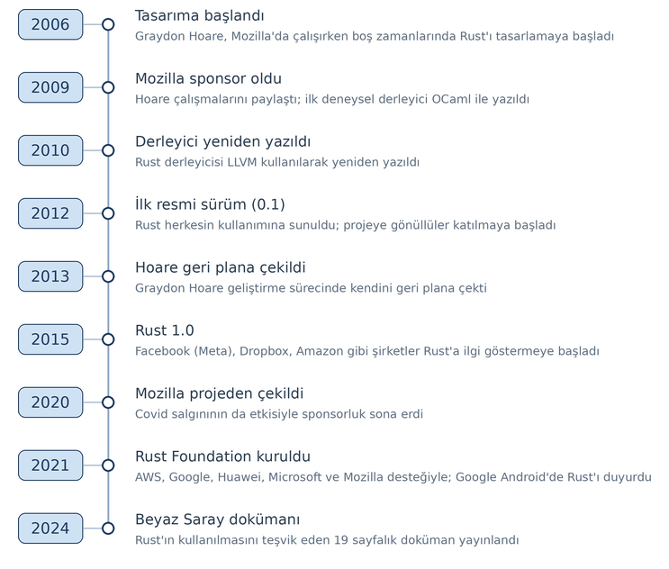

1. Giriş
Bu bölümde Rust’a bir giriş yapacağız.
1.1. Rust Nasıl Bir Dildir?
Rust genel amaçlı, yapısal, prosedürel ve fonksiyonel programlama modellerini destekleyen çok modelli (multi-paradigm), statik tür sistemine sahip modern bir programlama dilidir. Tasarımında özellikle eşzamanlı (concurrent) programlama etkinliklerinin daha güvenli biçimde sağlanması ön planda tutulmuştur. Bunun sağlanabilmesi için de bellek erişim güvenliğine (memory safety) özel bir önem verilmiştir.
Rust bir sistem programlama dili olarak kullanılabilecek biçimde tasarlanmıştır. Bu nedenle C Programlama Diline ve kısmen de C++ Programlama Diline yenilikçi bir seçenek oluşturmaktadır. Rust C Programlama Dilinden biraz daha yüksek seviyeli bir dildir. Birtakım modern özellikler performans kaybına yol açmayacak biçimde dile entegre edilmiştir.
Rust nesne yönelimli ya da nesne tabanlı bir programlama dili değildir. Ancak nesne yönelimli programlama tekniğindeki bazı prensiplerin uygulanabileceği bir tasarım özelliğine sahiptir.
Rust çeşitli programlama dillerinden ilham alınarak tasarlanmıştır. Rust’ı etkileyen programlama dilleri şunlardır:
C/C++
ML / OCaml
Erlang
Scheme
Haskell
Go
Swift
Kotlin
Python
Rust’ın temel bir kütüphanesi vardır. Ayrıca zamanla kendine özgü bir ekosistem de oluşmuştur. Bu ekosistemde Rust programcıları kendi çalışmalarını başkalarıyla paylaşmaktadır. Dolayısıyla daha spesifik gereksinimler için crates.io deposu içerisindeki üçüncü parti kütüphanelerden faydalanılmaktadır.
1.2. Rust’ın Tarihsel Gelişimi
Rust nispeten yeni bir programlama dilidir. Dolayısıyla kısa bir tarihi vardır.
Rust’ın tasarımına 2006 yılında Mozilla şirketi çalışanı olan Graydon Hoare (Greydın Ho:r biçiminde okunuyor) tarafından başlanmıştır. Hoare bu çalışmaları 2009’a kadar tek başına ve ancak boş zamanlarında yürütmüştür. Hoare 2009 yılından itibaren yaptığı çalışmaları Mozilla’daki çalışma arkadaşlarıyla paylaşmaya başlamıştır. İlk Rust derleyicisi de deneysel amaçla OCaml Dili kullanılarak yazılmıştır. Mozilla 2009 yılında Rust projesine sponsor olmaya başlamıştır. Rust derleyicisi 2010 yılında LLVM kullanılarak yeniden yazılmıştır. Rust’ın ilk resmi sürümü (0.1 versiyonu) 2012 yılında herkesin kullanımına sunulmuştur. Bu yıllarda Rust projesine Mozilla dışında pek çok gönüllü de katılmaya başlamıştır. Mozilla tam zamanlı çalışmak üzere çeşitli geliştiricileri de işe almıştır. Rust 2012 yılından sonra sürekli iyileştirilmeye çalışılmıştır. Graydon Hoare 2013 yılında Rust’ın geliştirilme sürecinde kendini geri plana çekmiştir. Dil üzerindeki pek çok değişiklikten sonra 2015 yılında Rust’ın 1.0 versiyonu kullanıma sunulmuştur. Bu süreçte Rust topluluğu da gitgide büyümüştür.
Rust’ın ilk versiyonu çıktıktan sonra Mozilla dışında Facebook (Meta), Dropbox, Amazon gibi şirketler de Rust’a ilgi göstermeye başlamıştır. University of Minho, NOVA University Lisbon ve University of Coimbra’nın yaptığı araştırmalara göre Rust Java’dan iki kat daha az elektrik harcamaktadır. Ancak C ile kıyaslandığında C’den biraz daha fazla elektrik harcamaktadır.
Mozilla 2020 yılında Covid salgınının da etkisiyle Rust projesinden çekilme kararı almıştır. Böylece sponsorluk bağlamında işe aldığı kişileri de işten çıkarmıştır. 2021 yılında Amazon Web Services, Google, Huawei, Microsoft, Mozilla şirketlerinin desteğiyle Rust Foundation isimli bir kurum oluşturulmuştur. 2021’de Google Android’de Rust’ın da kullanılacağını belirtmiştir. 2024’te Beyaz Saray Rust’ın kullanılmasını teşvik eden 19 sayfalık bir doküman yayınlamıştır. Her ne kadar Beyaz Saray’ın bu konuyla doğrudan bir ilgisi yoksa da bu rapor Rust’ın geleceği konusunda iyimser bir hava estirmiştir.


Rust’ın geliştirilmesine halen Rust Foundation (https://rustfoundation.org) kurumu tarafından devam edilmektedir.
Rust’ın versiyonlarının tarihsel gelişimi şöyledir:
2006: Rust’ın geliştirilmesine başlandı.
2009: Mozilla, Rust projesini desteklemeye başladı.
2010: İlk bootstrap (ön-yükleme) derleyicisi yayımlandı.
2012: Rust’ın kendini derleyen (self-hosted) derleyicisinin alfa sürümleri (örneğin, 0.3 alfa) yayımlandı.
Mayıs 2015: Rust 1.0 stabil sürümü yayımlandı; dil, artık üretim ortamında kullanılmaya hazır hale geldi.
Temmuz 2016: 1.10 sürümü yayımlandı.
Ağustos 2017: 1.20 sürümü yayımlandı.
Ekim 2018: 1.30 sürümü yayımlandı.
Aralık 2019: 1.40 sürümü yayımlandı.
Şubat 2021: 1.50 sürümü yayımlandı.
Nisan 2022: 1.60 sürümü yayımlandı.
Haziran 2023: 1.70 sürümü yayımlandı.
Temmuz 2024: 1.80 sürümü yayımlandı.
Eylül 2025: 1.90 sürümü yayımlandı.
Ekim 2026: 1.99 sürümü yayımlandı.
1.3. Rust’ın Resmi Dokümanları
Rust Foundation Rust Programlama Dilinin geliştirilmesinden ve sürdürümünden sorumludur. Resmi sitesine aşağıdaki bağlantıdan erişebilirsiniz:
Rust’ın üç önemli resmi (formal) dokümanı vardır.
The Rust Reference (https://doc.rust-lang.org/reference/index.html)
The Rust Standard Library (https://doc.rust-lang.org/std/index.html)
The Rustonomicon (https://doc.rust-lang.org/nomicon/index.html)
The Rust Reference dokümanı programlama dilinin resmi (formal) belirlemelerini içermektedir. Yani bu doküman adeta Rust Programlama Dilinin standart dokümanı gibi düşünülebilir. Ancak bu tür referans dokümanlarını oluşturmak kolay değildir. Dolayısıyla kitabın yazıldığı tarihlerde bu dokümanda da eksiklikler de vardır. The Rust Standard Library dokümanları Rust’ın standart kütüphanesini açıklamaktadır. The Rustonomicon dokümanları ise Rust’ta unsafe özellikler ve unsafe kodların oluşturulmasına ilişkin bilgileri içermektedir. Ayrıca Rust’ın resmi sitesinde tutorial biçiminde The Rust Programming Language isimli bir kitap da bulunmaktadır. Bu kitap aynı zamanda kağıda basılı biçimde de satılmaktadır.
1.4. Kurulum
Şüphesiz Rust’ı öğrenirken ilk yapılması gereken şey Rust derleyicisinin ve gerekli birtakım araçların bilgisayara yüklenmesidir. Bu işlem rustup isimli program tarafından yapılmaktadır. Bu rustup programı güncelleme amacıyla da kullanılmaktadır. rustup programını aşağıdaki bağlantıdan indirebilirsiniz:
https://rust-lang.org/tools/install/
Windows sistemlerinde rustup gerçekten çalıştırılabilir (executable) bir programdır. Unix/Linux ve macOS sistemlerinde kurulum işlemi sh.rustup.rs isimli bir kabuk betiği (shell script) tarafından yapılmaktadır. Bu sistemlerde tek yapılacak şey komut satırında aşağıdaki kabuk komutunu çalıştırmaktır:
$ curl --proto '=https' --tlsv1.2 -sSf https://sh.rustup.rs | sh
Bu komut çalıştırıldığında rustup programı kurulmuş olacaktır.
rustup programı ile Rust derleyicisini ve diğer araçları şöyle kurabilirsiniz:
rustup default stable
rustup bir konsol programı gibi çalışmaktadır. Program çalıştırıldığında bir seçenek menüsü çıkartır. Kurulumu
kendisi yapar. Bu kurulum yapıldığında PATH çevre değişkeni otomatik olarak güncellenmektedir. Dolayısıyla bir
terminal açıldığında Rust derleyicisi ve cargo gibi araçlar çalıştırılabilmektedir.
1.5. Merhaba Dünya Programının Derlenerek Çalıştırılması
Şimdi de Merhaba dünya (hello world) programının nasıl derlenerek çalıştırılacağını görelim. Rust’ın derleyicisi diğer derleyicilerde olduğu gibi bir konsol uygulaması biçiminde yazılmıştır. Derleyici programın ismi rustc biçimindedir. Diğer dillerde olduğu gibi önce herhangi bir editörde Merhaba dünya programı yazılır ve dosya uzantısı .rs olacak biçimde save edilir. Rust kaynak dosyalarının doğal uzantıları .rs biçimindedir. Aşağıdaki programı herhangi bir text editörde yazarak sample.rs biçiminde save edelim:
fn main() {
println!("Merhaba dünya");
}
Rust kaynak dosyalarının Unicode UTF-8 kodlamasıyla oluşturulmuş olması gerekmektedir. Yani Rust derleyicisi kaynak kodun bu kodlama biçimine sahip olduğunu varsaymaktadır.
Derleme oldukça basittir. Derlenecek program dosyası rustc derleyicisine komut satırı argümanı olarak verilir:
rustc sample.rs
Bu işlemle önce kaynak dosya derlenecek sonra bağlanarak (link edilerek) çalıştırılabilen dosya oluşturulacaktır. Windows sistemlerinde komut satırında doğrudan dosya ismini yazarak programı çalıştırabilirsiniz. UNIX/Linux ve macOS sistemlerinde çalıştırma aşağıdaki gibi yapılmalıdır:
$ ./sample
Rust’ı Windows’a yüklediğimizde rustc default durumda linbağlama (link) işlemi için Microsoft’un link.exe programını kullanmaktadır. Dolayısıyla Windows sistemlerinde MSVC araçlarının yüklü olması gerekir. Kurulum sırasında rustup programı bu kontrolü yapmakta ve eğer MSVC aracı yoksa bunu kullanıcıya sorarak yüklemektedir. Ancak Windows sistemlerinde GNU Araç Zinciriyle (GNU Toolchain) çalışılabilmektedir.
Tıpkı gcc ve clang derleyicilerinde olduğu gibi rustc derleyicisi de bağlama işleminden sonra amaç dosyayı (object file) silmektedir. Dolayısıyla rustc programını çalıştırdıktan sonra bir amaç dosya göremezseniz şaşırmayınız.
Link işlemini yapmadan yalnızca amaç dosya oluşturmak için –emit=obj seçeneği kullanılmaktadır. Örneğin:
rustc --emit=obj sample.rs
Bu işlemle sample.o isminde bir amaç dosya oluşturulacaktır. Ancak bağlama işlemi yapılmayacaktır.
Tıpkı gcc ve clang derleyicilerinde olduğu gibi “-o <hedef_dosya_ismi>” seçeneği ile hedef dosyaya istenilen bir isim verilebilmektedir. Örneğin:
rustc -o project.exe sample.rs
Burada artık Windows’ta çalıştırılabilen dosya sample.exe isminde değil project.exe isminde olacaktır. Tabii UNIX/Linux ve macOS sistemlerinde çalıştırılabilen dosyaların belli bir uzantısı yoktur. Aynı işlem bu sistemlerde şöyle yapılabilir:
rustc -o project sample.rs
1.6. Sandık ve Paket Kavramları
Rust dünyasında derleyicinin tek parça olarak ele aldığı derleme birimine sandık (crate) denilmektedir. Bir sandık (crate) derlendiğinde ya çalıştırılabilir bir dosya ya da bir kütüphane dosyası elde edilir. Birinci durumda ikili sandık (binary crate), ikinci durumda kütüphane sandığı (library crate) terimleri kullanılmaktadır. Sandık tek bir kaynak dosyadan oluşabileceği gibi birden fazla kaynak dosyadan da oluşabilir. Ancak derleyiciye yalnızca sandığın kökü (crate root) denilen tek bir kaynak dosya verilir (tipik olarak main.rs ya da lib.rs). Diğer kaynak dosyalar bu dosyadan başlayarak mod bildirimleriyle sandığın modül ağacına dahil edilir. Crate kavramı diğer programlama ortamlarındaki proje kavramına benzemektedir. Örneğin biz C++’ta çalışırken bir proje yaratıp o projenin içerisine birden fazla kaynak dosya yerleştirip projeyi build edebiliriz. İşte aynı biçimde Rust dünyasında da bir sandığın içerisinde birden fazla kaynak dosya bulunabilmektedir. Yalnız C++’ta her kaynak dosya ayrı ayrı derlenip sonra bağlanırken (link edilirken), Rust’ta sandığın (crate) tamamı tek bir derleme birimidir. Paket (package) ise Rust dilinin değil Cargo’nun bir kavramıdır. Paket bir Cargo.toml dosyası ile tanımlanan ve sandıkları tutan mantıksal bir kap gibidir. Bir pakette birden fazla sandık olabilir. Ancak bir pakette en fazla bir tane kütüphane sandığı bulunabilir, ikili sandıkların sayısında ise bir sınır yoktur. Örneğin Visual Studio IDE’sinde projeleri tutan mantıksal kaba çözüm (solution) denilmektedir. Rust’taki paket Visual Studio’daki çözüm kavramına kabaca benzetilebilir. Fakat çözüm kavramının daha yakın karşılığı birden fazla paketi bir araya getiren çalışma alanı (workspace) kavramıdır. Paket sözcüğü aslında diğer başka programlama dillerinde de benzer anlamda kullanılabilmektedir. Örneğin Python dünyasında paket denildiğinde bir grup modül anlaşılmaktadır.
1.7. cargo Aracı
Aslında Rust programcıları kaynak dosyaları komut satırından doğrudan rustc derleyicisi ile derlemek yerine genellikle cargo isimli bir araçla derleme işlemini yaparlar. cargo hem bir paket yöneticisi hem de bir build otomasyon aracıdır. Yani cargo programı hem depolardan çeşitli kütüphaneleri (crates) indirip projeye dahil edebilmekte hem de birden fazla kaynak dosyayı derleyerek bağlama işlemini yapabilmektedir. Rust paket olarak yüklendiğinde zaten cargo aracı da bilgisayarınıza yüklenmiş olmaktadır. Biz kitabımızda cargo programının ayrıntılı kullanımını ileride ele alacağız. Ancak burada bu programın bir proje (paket) oluşturup onu derlemek ve çalıştırmak için yalın bir biçimde nasıl kullanılacağını göreceğiz.